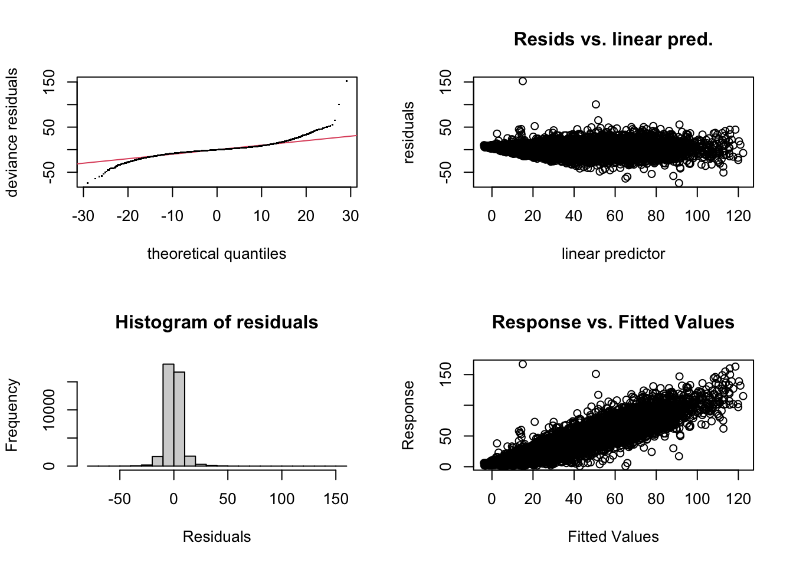
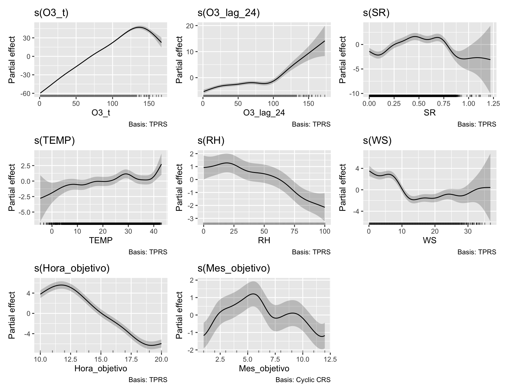
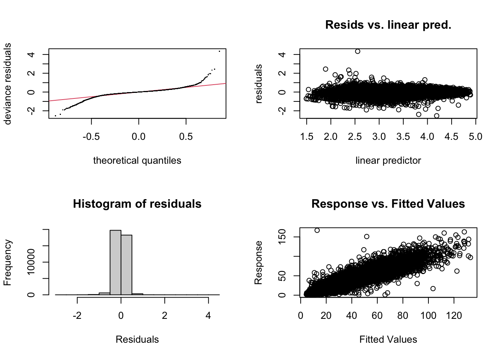
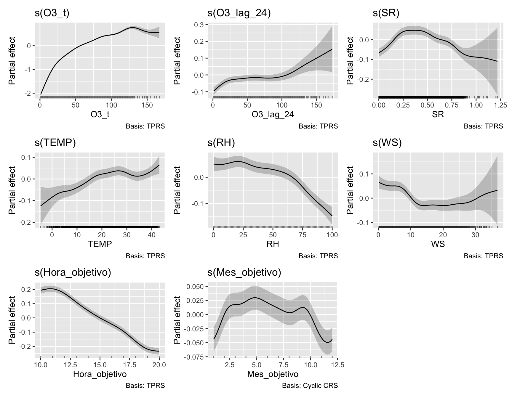

library(tidyverse)
library(here)
library(lubridate)
library(mgcv)
library(gratia) # para visualizar los smooths de forma más clara que plot.gam base
options(scipen = 999)
set.seed(123)Modelado GAM para O3
Objetivo de este archivo
Este archivo se utiliza únicamente para construir, ajustar e interpretar el modelo GAM (Modelo Aditivo Generalizado). La limpieza, homologación y justificación de las decisiones metodológicas permanecen documentadas en reporte.qmd.
Igual que el archivo de XGBoost, este parte directamente de data/base_modelado_o3.rds, que ya contiene la cuadrícula horaria, las variables limpias y los rezagos seleccionados. Aquí no se vuelve a homologar fechas ni a reconstruir la historia temporal.
La definición del problema se mantiene igual que en el reporte principal y que en el archivo de XGBoost:
- estaciones:
NTE,NTE2,NOyNE; - periodo útil: 2021-2025;
- entrenamiento: 2021-2023;
- validación: 2024;
- prueba final: 2025;
- horas objetivo: 10:00-20:00;
- horizonte máximo: 24 horas.
Diferencia clave frente a XGBoost: un GAM (mgcv) no maneja valores faltantes de forma nativa. Cualquier fila con NA en algún predictor se elimina antes de ajustar el modelo. Esto significa que el conjunto de entrenamiento/validación del GAM será más pequeño que el usado por XGBoost, y esta reducción se documenta explícitamente antes de ajustar el modelo.
El desarrollo se hace de forma incremental: primero se construye el modelo para una hora de anticipación (h = 1), y después se extiende la misma lógica a 6, 12 y 24 horas para comparar contra XGBoost en los mismos horizontes.
Carga de la base de modelado
Se lee exactamente la misma base que utilizó XGBoost, sin ninguna transformación adicional.
ruta_base_modelado <- here("data", "base_modelado_o3.rds")
if (!file.exists(ruta_base_modelado)) {
stop(
"No se encontró data/base_modelado_o3.rds. ",
"Renderiza primero quarto/reporte.qmd para generar la base de modelado."
)
}
base_origen_modelado <- readRDS(ruta_base_modelado)columnas_requeridas <- c(
"Estacion", "fecha_hora",
"O3_t", "O3_lag_1", "O3_lag_2", "O3_lag_3", "O3_lag_24",
"SR", "TEMP", "RH", "WS", "WD_sin", "WD_cos", "NOX"
)
faltantes_estructura <- setdiff(
columnas_requeridas,
names(base_origen_modelado)
)
if (length(faltantes_estructura) > 0) {
stop(
"La base de modelado no contiene: ",
paste(faltantes_estructura, collapse = ", ")
)
}Construcción del horizonte
Se reutiliza exactamente la misma lógica que en el archivo de XGBoost, para que ambos modelos partan de la misma definición de horizonte, hora objetivo y separación cronológica.
construir_base_horizonte <- function(h) {
base_origen_modelado |>
group_by(Estacion) |>
mutate(
O3_objetivo = lead(O3_t, h)
) |>
ungroup() |>
mutate(
Horizonte_h = h,
fecha_objetivo = fecha_hora + hours(h),
Año_objetivo = year(fecha_objetivo),
Hora_objetivo = hour(fecha_objetivo),
Mes_objetivo = month(fecha_objetivo),
Periodo = case_when(
Año_objetivo %in% 2021:2023 ~ "Entrenamiento",
Año_objetivo == 2024 ~ "Validacion",
Año_objetivo == 2025 ~ "Prueba",
TRUE ~ NA_character_
)
) |>
filter(
!is.na(Periodo),
between(Hora_objetivo, 10, 20)
)
}
calcular_metricas <- function(observado, predicho) {
tibble(
MAE = mean(abs(observado - predicho)),
RMSE = sqrt(mean((observado - predicho)^2))
)
}Nota: aquí no se generan Hora_sin_obj/Hora_cos_obj ni Mes_sin_obj/Mes_cos_obj, porque el GAM va a modelar Hora_objetivo y Mes_objetivo directamente con splines (ver justificación abajo), en vez de con la codificación seno/coseno que usó XGBoost.
Preparación de los predictores del GAM
Selección de variables
Se parte del mismo conjunto principal definido en la Tabla 29 del reporte, con dos ajustes deliberados para el GAM:
Hora_objetivose modela con un smooth no cíclico, porque el objetivo está restringido a 10:00-20:00 (11 horas), no a las 24 horas del día. Una base cíclica (bs = "cc") forzaría a conectar la hora 20 con la hora 10 como si fueran continuas, lo cual no aplica aquí.Mes_objetivosí se modela con un smooth cíclico (bs = "cc"), porque diciembre y enero sí son meses consecutivos en el conjunto completo.
predictores_gam <- c(
"O3_t", "O3_lag_24",
"SR", "TEMP", "RH", "WS", "WD_sin", "WD_cos",
"Hora_objetivo", "Mes_objetivo", "Estacion"
)Por ahora se deja fuera O3_lag_1, O3_lag_2 y O3_lag_3 para evitar concurvity con O3_t (ver diagnóstico más abajo). Si el chequeo de concurvity muestra que aportan información independiente, se pueden agregar después.
Preparación de la base para h = 1
base_h1 <- construir_base_horizonte(1) |>
filter(!is.na(O3_objetivo))
resumen_h1_completo <- base_h1 |>
drop_na(all_of(predictores_gam)) |>
count(Periodo, name = "Casos_completos") |>
left_join(
base_h1 |> count(Periodo, name = "Objetivos_disponibles"),
by = "Periodo"
) |>
mutate(Cobertura_pct = round(100 * Casos_completos / Objetivos_disponibles, 1)) |>
arrange(factor(Periodo, levels = c("Entrenamiento", "Validacion", "Prueba")))
knitr::kable(
resumen_h1_completo,
caption = "Casos completos disponibles para el GAM (h = 1)"
)| Periodo | Casos_completos | Objetivos_disponibles | Cobertura_pct |
|---|---|---|---|
| Entrenamiento | 39043 | 45110 | 86.6 |
| Validacion | 8682 | 15547 | 55.8 |
| Prueba | 3471 | 7467 | 46.5 |
Esta tabla es el equivalente, para el GAM, de la Tabla 31 del reporte: muestra cuánta información se pierde al exigir casos completos, información necesaria para justificar la decisión frente a los profesores.
base_h1_completo <- base_h1 |>
drop_na(all_of(predictores_gam)) |>
mutate(Estacion = factor(Estacion))
entrenamiento_h1 <- base_h1_completo |> filter(Periodo == "Entrenamiento")
validacion_h1 <- base_h1_completo |> filter(Periodo == "Validacion")Modelo de persistencia (recalculado sobre el subconjunto del GAM)
Aunque ya existe un modelo de persistencia en el archivo de XGBoost, aquí se recalcula sobre el subconjunto de casos completos que efectivamente usará el GAM, para que la comparación GAM-vs-persistencia sea justa dentro de este mismo archivo.
metricas_persistencia_h1_gam <- calcular_metricas(
validacion_h1$O3_objetivo,
validacion_h1$O3_t
) |>
mutate(Modelo = "Persistencia", Observaciones = nrow(validacion_h1), .before = 1)GAM
Especificación del modelo
Se utiliza bam() en vez de gam() porque está optimizado para bases de datos grandes (decenas de miles de filas), con method = "fREML" y discrete = TRUE para acelerar el ajuste sin perder precisión relevante.
Estacion entra como factor paramétrico (un desplazamiento fijo por estación), no como smooth — es el punto de partida más simple e interpretable; se puede explorar un smooth distinto por estación (by = Estacion) más adelante si la validación lo justifica.
modelo_gam_h1 <- bam(
O3_objetivo ~
s(O3_t, k = 10) +
s(O3_lag_24, k = 10) +
s(SR, k = 10) +
s(TEMP, k = 15) +
s(RH, k = 10) +
s(WS, k = 10) +
WD_sin +
WD_cos +
s(Hora_objetivo, k = 8) +
s(Mes_objetivo, bs = "cc", k = 10) +
Estacion,
data = entrenamiento_h1,
method = "fREML",
discrete = TRUE
)Diagnóstico de concurvity
Antes de interpretar el modelo, se revisa si algún smooth se puede aproximar a partir de otros (el equivalente, en GAM, de revisar multicolinealidad en una regresión lineal múltiple).
concurvity(modelo_gam_h1, full = TRUE) para s(O3_t) s(O3_lag_24) s(SR) s(TEMP) s(RH)
worst 0.9921855 0.9787612 0.9819626 0.8443773 0.8671710 0.6995598
observed 0.9921855 0.9122923 0.9633448 0.5616501 0.6297536 0.6621488
estimate 0.9921855 0.8822385 0.8648879 0.7521874 0.7721563 0.5728808
s(WS) s(Hora_objetivo) s(Mes_objetivo)
worst 0.9416013 0.5993999 0.7116622
observed 0.4938965 0.5690740 0.4216838
estimate 0.7417094 0.5747879 0.1747294Valores cercanos a 1 en algún par de variables indican que uno de los smooths es casi redundante frente a otro; valores bajos (cercanos a 0) indican que aportan información independiente. Esto ayuda a decidir si vale la pena reincorporar O3_lag_1, O3_lag_2 o O3_lag_3 más adelante.
Resumen del modelo
summary(modelo_gam_h1)
Family: gaussian
Link function: identity
Formula:
O3_objetivo ~ s(O3_t, k = 10) + s(O3_lag_24, k = 10) + s(SR,
k = 10) + s(TEMP, k = 15) + s(RH, k = 10) + s(WS, k = 10) +
WD_sin + WD_cos + s(Hora_objetivo, k = 8) + s(Mes_objetivo,
bs = "cc", k = 10) + Estacion
Parametric coefficients:
Estimate Std. Error t value Pr(>|t|)
(Intercept) 68.56319 0.39208 174.871 < 0.0000000000000002 ***
WD_sin -0.40944 0.08371 -4.891 0.00000101 ***
WD_cos 0.28061 0.06156 4.558 0.00000517 ***
EstacionNTE2 -1.54815 0.15931 -9.718 < 0.0000000000000002 ***
EstacionNO -0.39024 0.16953 -2.302 0.021349 *
EstacionNE -0.61994 0.16316 -3.800 0.000145 ***
---
Signif. codes: 0 '***' 0.001 '**' 0.01 '*' 0.05 '.' 0.1 ' ' 1
Approximate significance of smooth terms:
edf Ref.df F p-value
s(O3_t) 8.575 8.897 8131.81 <0.0000000000000002 ***
s(O3_lag_24) 6.743 7.515 38.68 <0.0000000000000002 ***
s(SR) 8.200 8.726 79.68 <0.0000000000000002 ***
s(TEMP) 9.669 11.248 12.08 <0.0000000000000002 ***
s(RH) 6.023 7.165 27.23 <0.0000000000000002 ***
s(WS) 7.790 8.406 204.15 <0.0000000000000002 ***
s(Hora_objetivo) 6.805 6.986 965.56 <0.0000000000000002 ***
s(Mes_objetivo) 7.069 8.000 32.41 <0.0000000000000002 ***
---
Signif. codes: 0 '***' 0.001 '**' 0.01 '*' 0.05 '.' 0.1 ' ' 1
R-sq.(adj) = 0.861 Deviance explained = 86.2%
fREML = 1.3104e+05 Scale est. = 47.769 n = 39043La columna edf (grados de libertad efectivos) es la clave de interpretación: un edf cercano a 1 indica que el efecto de esa variable es prácticamente lineal; valores más altos indican una curva más flexible/no lineal. Esto reemplaza directamente lo que XGBoost necesita SHAP para mostrar.
gam.check(modelo_gam_h1)
Method: fREML Optimizer: perf chol
$grad
[1] 0.0000000000136579636 -0.0000000000106985532 0.0000000000150239821
[4] 0.0000000000093205443 -0.0000000000005551115 -0.0000000000004871659
[7] 0.0000000000013233858 0.0000000000015472068 0.0000000006220943760
$hess
[,1] [,2] [,3] [,4] [,5]
2.9741605343 0.0244551576 -0.001000811 -0.018041194 -0.0008916287
0.0244551576 2.1130396808 0.003206685 -0.006517841 0.0094853792
-0.0010008106 0.0032066847 2.982203888 0.009098081 0.0036670858
-0.0180411938 -0.0065178414 0.009098081 1.551640313 0.0017819659
-0.0008916287 0.0094853792 0.003667086 0.001781966 1.1414083553
-0.0028636657 -0.0026432323 0.007569898 -0.007708139 0.0088805933
-0.0001178829 0.0020488596 0.017397336 -0.001162086 0.0029110240
0.0066410486 0.0005271959 0.021653267 0.035938407 -0.0183768249
d -3.7873643736 -2.8715570740 -3.600006401 -4.334304677 -2.5116177091
[,6] [,7] [,8] [,9]
-0.002863666 -0.0001178829 0.0066410486 -3.787364
-0.002643232 0.0020488596 0.0005271959 -2.871557
0.007569898 0.0173973355 0.0216532666 -3.600006
-0.007708139 -0.0011620857 0.0359384070 -4.334305
0.008880593 0.0029110240 -0.0183768249 -2.511618
3.153866410 0.0047983191 -0.0030936296 -3.395222
0.004798319 2.8684125328 -0.0011974237 -2.902534
-0.003093630 -0.0011974237 3.0278986524 -3.534372
d -3.395221619 -2.9025344846 -3.5343718818 19515.000000
Model rank = 80 / 80
Basis dimension (k) checking results. Low p-value (k-index<1) may
indicate that k is too low, especially if edf is close to k'.
k' edf k-index p-value
s(O3_t) 9.00 8.57 1.00 0.630
s(O3_lag_24) 9.00 6.74 1.00 0.460
s(SR) 9.00 8.20 1.00 0.390
s(TEMP) 14.00 9.67 0.98 0.025 *
s(RH) 9.00 6.02 1.00 0.305
s(WS) 9.00 7.79 0.99 0.200
s(Hora_objetivo) 7.00 6.81 0.99 0.290
s(Mes_objetivo) 8.00 7.07 1.01 0.820
---
Signif. codes: 0 '***' 0.001 '**' 0.01 '*' 0.05 '.' 0.1 ' ' 1Visualización de los efectos (la interpretación “gratis” del GAM)
draw(modelo_gam_h1)
Cada panel es directamente interpretable: muestra cómo cambia la predicción de O3 conforme varía esa variable, manteniendo las demás fijas — sin necesitar SHAP ni PDP calculados por separado.
Modelo alternativo con familia Gamma (link log)
El diagnóstico de residuos del modelo gaussiano (QQ-plot, residuos vs. predictor lineal, histograma) muestra dos problemas relacionados: la varianza de los residuos crece conforme aumenta el valor predicho (heterocedasticidad) y la cola derecha es más pesada de lo que un modelo gaussiano espera. Esto es consistente con la asimetría de O3 ya documentada en el análisis exploratorio (Figura 1 del reporte). Como O3 es siempre positivo en la base limpia (mínimo observado = 1, Tabla 17), se prueba una familia Gamma con link logarítmico, que asume que la varianza crece con el cuadrado de la media — el supuesto natural para concentraciones de contaminantes.
modelo_gam_h1_gamma <- bam(
O3_objetivo ~
s(O3_t, k = 10) +
s(O3_lag_24, k = 10) +
s(SR, k = 10) +
s(TEMP, k = 15) +
s(RH, k = 10) +
s(WS, k = 10) +
WD_sin +
WD_cos +
s(Hora_objetivo, k = 8) +
s(Mes_objetivo, bs = "cc", k = 10) +
Estacion,
data = entrenamiento_h1,
family = Gamma(link = "log"),
method = "fREML",
discrete = TRUE
)gam.check(modelo_gam_h1_gamma)
Method: fREML Optimizer: perf chol
$grad
[1] -0.0000012879890 0.0000002270274 0.0000032416385 0.0000021753419
[5] 0.0000007150569 0.0000001564142 -0.0000002528689 0.0000003851668
[9] -0.0034446576647
$hess
[,1] [,2] [,3] [,4] [,5]
3.703071810 0.029338052 0.002519846 0.004723680 0.0033534305
0.029338052 1.709553727 0.004620336 0.015299524 0.0045130626
0.002519846 0.004620336 1.792299757 0.028387185 0.0033741395
0.004723680 0.015299524 0.028387185 1.695735098 0.0593771263
0.003353430 0.004513063 0.003374139 0.059377126 1.5135066934
0.002922463 0.002124048 0.013011759 -0.003985939 0.0094194577
0.002752419 0.014694082 -0.001691540 -0.005860592 0.0031393639
-0.002773348 -0.006411462 0.014776594 0.001340199 -0.0001432261
d -3.857399171 -2.321953613 -3.109629034 -3.425566804 -2.8770080873
[,6] [,7] [,8] [,9]
0.002922463 0.0027524194 -0.0027733480 -3.857399
0.002124048 0.0146940821 -0.0064114617 -2.321954
0.013011759 -0.0016915404 0.0147765938 -3.109629
-0.003985939 -0.0058605922 0.0013401988 -3.425567
0.009419458 0.0031393639 -0.0001432261 -2.877008
2.354651540 0.0020529026 0.0035733396 -2.859565
0.002052903 2.7162650644 0.0009582981 -2.879197
0.003573340 0.0009582981 3.1727706300 -3.675419
d -2.859564826 -2.8791965746 -3.6754189706 19515.003445
Model rank = 80 / 80
Basis dimension (k) checking results. Low p-value (k-index<1) may
indicate that k is too low, especially if edf is close to k'.
k' edf k-index p-value
s(O3_t) 9.00 8.71 0.95 <0.0000000000000002 ***
s(O3_lag_24) 9.00 5.64 0.98 0.115
s(SR) 9.00 7.22 1.02 0.970
s(TEMP) 14.00 7.85 1.01 0.780
s(RH) 9.00 6.75 0.97 0.015 *
s(WS) 9.00 6.72 0.95 <0.0000000000000002 ***
s(Hora_objetivo) 7.00 6.76 1.00 0.535
s(Mes_objetivo) 8.00 7.35 0.98 0.140
---
Signif. codes: 0 '***' 0.001 '**' 0.01 '*' 0.05 '.' 0.1 ' ' 1Se espera que el QQ-plot y el gráfico de residuos vs. predictor lineal luzcan más estables (menos abanico, menos desviación en la cola derecha) que en el modelo gaussiano. Si es así, este modelo se vuelve el candidato principal para reportar; si no mejora de forma clara, se puede mantener el gaussiano por su interpretación más directa (efectos aditivos en la escala original de O3, en vez de en escala logarítmica).
draw(modelo_gam_h1_gamma)
Nota de interpretación: con link logarítmico, los efectos parciales de draw() están en la escala del predictor lineal (log de O3), no en unidades directas de O3. Para explicar el efecto de una variable en unidades de O3, es más claro usar predict(..., type = "response") variando esa variable y fijando las demás, en vez de leer directamente la escala del smooth.
Comparación con persistencia en validación 2024
Igual que con XGBoost, la comparación se hace sobre las mismas observaciones (aquí, el subconjunto de casos completos de validación). Se incluyen ambos modelos GAM (gaussiano y Gamma) para decidir cuál llevar a los demás horizontes.
pred_gam_validacion_h1 <- predict(modelo_gam_h1, newdata = validacion_h1)
pred_gam_gamma_validacion_h1 <- predict(modelo_gam_h1_gamma, newdata = validacion_h1, type = "response")
metricas_gam_h1 <- calcular_metricas(
validacion_h1$O3_objetivo,
pred_gam_validacion_h1
) |>
mutate(Modelo = "GAM (gaussiano)", Observaciones = nrow(validacion_h1), .before = 1)
metricas_gam_gamma_h1 <- calcular_metricas(
validacion_h1$O3_objetivo,
pred_gam_gamma_validacion_h1
) |>
mutate(Modelo = "GAM (Gamma, link log)", Observaciones = nrow(validacion_h1), .before = 1)
bind_rows(
metricas_persistencia_h1_gam,
metricas_gam_h1,
metricas_gam_gamma_h1
) |>
mutate(MAE = round(MAE, 3), RMSE = round(RMSE, 3)) |>
knitr::kable(caption = "Comparación GAM (gaussiano y Gamma) vs. persistencia en validación 2024 para h = 1")| Modelo | Observaciones | MAE | RMSE |
|---|---|---|---|
| Persistencia | 8682 | 7.031 | 9.590 |
| GAM (gaussiano) | 8682 | 4.884 | 6.910 |
| GAM (Gamma, link log) | 8682 | 4.933 | 6.907 |
Decisión pendiente: si el MAE/RMSE del modelo Gamma es similar o mejor que el gaussiano, y los diagnósticos de residuos mejoran, se recomienda adoptar Gamma como el modelo GAM definitivo y actualizar también la función entrenar_y_evaluar_gam_horizonte para usar family = Gamma(link = "log") y type = "response" en las predicciones de los demás horizontes.
Extensión a horizontes de 6, 12 y 24 horas
Se repite la misma lógica para los demás horizontes representativos, manteniendo la misma especificación del modelo. Esto permite comparar directamente contra la tabla de horizontes que ya obtuvo tu compañero con XGBoost.
entrenar_y_evaluar_gam_horizonte <- function(h) {
base_h <- construir_base_horizonte(h) |>
filter(!is.na(O3_objetivo)) |>
drop_na(all_of(predictores_gam)) |>
mutate(Estacion = factor(Estacion))
entrenamiento_h <- base_h |> filter(Periodo == "Entrenamiento")
validacion_h <- base_h |> filter(Periodo == "Validacion")
modelo_h <- bam(
O3_objetivo ~
s(O3_t, k = 10) +
s(O3_lag_24, k = 10) +
s(SR, k = 10) +
s(TEMP, k = 15) +
s(RH, k = 10) +
s(WS, k = 10) +
WD_sin +
WD_cos +
s(Hora_objetivo, k = 8) +
s(Mes_objetivo, bs = "cc", k = 10) +
Estacion,
data = entrenamiento_h,
method = "fREML",
discrete = TRUE
)
predicciones_h <- predict(modelo_h, newdata = validacion_h)
metricas_persistencia_h <- calcular_metricas(
validacion_h$O3_objetivo,
validacion_h$O3_t
)
metricas_gam_h <- calcular_metricas(
validacion_h$O3_objetivo,
predicciones_h
)
resumen_h <- tibble(
Horizonte_h = h,
Observaciones = nrow(validacion_h),
MAE_Persistencia = metricas_persistencia_h$MAE,
MAE_GAM = metricas_gam_h$MAE,
RMSE_Persistencia = metricas_persistencia_h$RMSE,
RMSE_GAM = metricas_gam_h$RMSE,
Mejora_MAE_pct = 100 * (MAE_Persistencia - MAE_GAM) / MAE_Persistencia,
Mejora_RMSE_pct = 100 * (RMSE_Persistencia - RMSE_GAM) / RMSE_Persistencia
)
list(modelo = modelo_h, resumen = resumen_h)
}resultado_h1_gam <- tibble(
Horizonte_h = 1,
Observaciones = metricas_gam_h1$Observaciones,
MAE_Persistencia = metricas_persistencia_h1_gam$MAE,
MAE_GAM = metricas_gam_h1$MAE,
RMSE_Persistencia = metricas_persistencia_h1_gam$RMSE,
RMSE_GAM = metricas_gam_h1$RMSE,
Mejora_MAE_pct = 100 * (MAE_Persistencia - MAE_GAM) / MAE_Persistencia,
Mejora_RMSE_pct = 100 * (RMSE_Persistencia - RMSE_GAM) / RMSE_Persistencia
)
evaluaciones_horizontes_gam <- map(
c(6, 12, 24),
entrenar_y_evaluar_gam_horizonte
)
resultados_horizontes_gam <- bind_rows(
resultado_h1_gam,
map_dfr(evaluaciones_horizontes_gam, ~ .x$resumen)
) |>
arrange(Horizonte_h)
resultados_horizontes_gam |>
mutate(
across(c(MAE_Persistencia, MAE_GAM, RMSE_Persistencia, RMSE_GAM), ~ round(.x, 3)),
Mejora_MAE_pct = round(Mejora_MAE_pct, 1),
Mejora_RMSE_pct = round(Mejora_RMSE_pct, 1)
) |>
knitr::kable(caption = "Persistencia y GAM en horizontes representativos de 2024")| Horizonte_h | Observaciones | MAE_Persistencia | MAE_GAM | RMSE_Persistencia | RMSE_GAM | Mejora_MAE_pct | Mejora_RMSE_pct |
|---|---|---|---|---|---|---|---|
| 1 | 8682 | 7.031 | 4.884 | 9.590 | 6.910 | 30.5 | 27.9 |
| 6 | 8047 | 23.253 | 10.727 | 30.301 | 14.634 | 53.9 | 51.7 |
| 12 | 7743 | 23.636 | 11.375 | 30.170 | 15.378 | 51.9 | 49.0 |
| 24 | 8571 | 11.819 | 10.452 | 16.354 | 14.254 | 11.6 | 12.8 |
Con esta tabla ya se puede comparar, horizonte por horizonte, el desempeño del GAM contra el XGBoost del compañero (MAE_XGBoost y MAE_GAM sobre las mismas métricas, aunque en subconjuntos de datos ligeramente distintos por el tema de casos completos — esto debe mencionarse explícitamente al comparar ambos modelos en el reporte final).
Evaluación
El GAM ya se evalúa sobre 2024 en los mismos horizontes representativos (1, 6, 12, 24) que XGBoost. El conjunto de 2025 permanece reservado para la prueba final y no debe utilizarse para decidir variables, k de los smooths, ni especificación del modelo.
Pendiente antes de considerar este modelo definitivo:
- Revisar los resultados de
concurvity()y decidir si vale la pena reincorporarO3_lag_1,O3_lag_2oO3_lag_3. - Revisar
gam.check()para confirmar que loskelegidos son suficientes (si el p-value de algún smooth engam.check()es muy bajo, puede necesitar más grados de libertad). - Decidir si conviene explorar un smooth distinto por estación (
by = Estacion) para las variables meteorológicas, dado que la Tabla 18 del reporte ya mostró diferencias sistemáticas de O3 entre estaciones. - Documentar explícitamente, en el reporte, la reducción de muestra por casos completos frente al enfoque nativo de XGBoost.